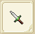
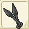
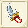
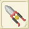

| ナイフ作成 | ||||
| 画像 | 日本語表示 | 性能 | 材料 | |
| 台湾名 | ||||
| ナイフ作成Lv1 | ||||
| ナイフ | ATK+9〜+18 CRI+3 |
銅4 バルサ20 |
||
| 小刀 | ||||
| シラバボック | ATK+14〜+27 CRI+3 |
銅4 鉄4 モミ20 |
||
| ?刃小刀 | ||||
| ナイフ作成Lv2 | ||||
| ロンデルダガー | ATK+18〜+36 CRI+3 |
銅6 鉄3 モミ20 木綿3 |
||
| 圓盤小刀 | ||||
| スティレット | ATK+23〜+45 CRI+3 |
鉄7 銀3 モミ20 イエローメランチ20 木綿4 |
||
| 細刃擲刀 | ||||
| ナイフ作成Lv3 | ||||
|  | スローイングナイフ | ATK+27〜+54 CRI+3 |
鉄8 銀5 モミ20 イエローメランチ20 フェルト4 |
|
| 滑翔小刀 | ||||
| バターディア | ATK+32〜+63 CRI+3 |
銀7 純銀5 イエローメランチ20 ツガ20 フェルト7 |
||
| 細直刃小刀 | ||||
| ナイフ作成Lv4 | ||||
| イアードダガー | ATK+36〜+72 CRI+3 |
銀8 純銀7 イエローメランチ20、ツガ20 コットン7 |
||
| 耳柄小刀 | ||||
| キドニーダガー | ATK+41〜+81 CRI+3 |
純銀8 金7 ツガ20 ヒバ20 コットン8 |
||
| 騎士小刀 | ||||
| クイーンブレス | RCV+2〜+5 CRI-1〜+1 CTR-1〜+1 HIT-1〜+1 AVD-1〜+1 クエストで使用 |
純銀5 銀1 金1 チタン鉱石20 フローズンアイリス20 |
||
| ナイフ作成Lv5 | ||||
| ボロックナイフ | ATK+45〜+90 CRI+3 |
純銀7 金8 ヒバ20 ツガ20 綿端8 |
||
| 球鍔小刀 | ||||
| バゼラード | ATK+49〜+99 CRI+3 |
純銀8 金7 白金7 アカマツ20 ツガ20 |
||
| 雙刃小刀 | ||||
|  | 苦無 | ATK+65〜110 AGL+1〜6 CRI+3 HIT+2 AVD+2 |
アカマツ20 ツガ20 白金5 純銀5 アルマイト6 |
|
| 忍者飛? | ||||
| ナイフ作成Lv6 | ||||
| アキナス | ATK+54〜+108 CRI+3 |
純銀8 金7 白金8 ヒバ20 アカマツ20 |
||
| 闊刃小刀 | ||||
| アンテニーダガー | ATK+59〜+117 CRI+3 |
ミスリル鋼15 ヒバ20 アカマツ20 |
||
| 觸角小刀 | ||||
| ナイフ作成Lv7 | ||||
| スクーニーダガー | ATK+122〜ATK+126 CRI+3 HIT+15 AVD-15 |
ミスリル鋼10 アカマツ20 ホオノキ20 綿端10 審眼1 |
||
| 漢拉提小刀 | ||||
| トゥルス | ATK+68〜+135 CRI+3 |
白金10 ミスリル鋼10 ツガ20 アカマツ20 ホオノキ20 |
||
| 兇殺刀 | ||||
| 水龍の短剣 | ATK+129 HIT+25 CRI+3 明鏡止水消費FP変化 |
ミスリル鋼10 マイティナイト2 魔族のクリスタル2 錆びた短剣1 |
||
| 水龍的小刀 | ||||
| ナイフ作成Lv8 | ||||
| ウインドテイル | ATK+50 AGL+15 CRI+18 HIT+15 AVD+15 |
ミスリル鋼20 アカマツ20 ホオノキ20 スギ20 魔族のクリスタル1 |
||
| 切肉小刀 | ||||
| カタール | ATK+77〜+153 CRI+3 |
ミスリル銀14 イエローメランチ20 ツガ20 アカマツ20 ホオノキ20 |
||
| 古傳小刀 | ||||
| トゥルス＋ | ATK+?〜+135 CRI+1〜+5 IT+1〜+3 |
ミスリル銀12 ブルードラゴンの鱗20 ホオノキ20 スギ20 スワンプヴァイパー10 |
||
| 疾速短刀+ | ||||
| ナイフ作成Lv9 | ||||
| ロキダガー | ATK+? CRI+3 |
ミスリル延べ20 アカマツ20 ホオノキ20 スギ20 ヒノキ20 |
||
| 華麗小刀 | ||||
| 手裏剣 | ATK+? CRI+6 HIT+3 陽炎消費FP変化 |
レグネシウム15 ホオノキ20 スギ20 マイティナイト1 誓いの証1 |
||
| 手裡劍 | ||||
| ナイフ作成Lv10 | ||||
| ハッダド | ATK+? CRI+3 |
レグネシウム15 ホオノキ20 スギ20 ヒノキ20 トネリコ20 |
||
| 勾爪擲刀 | ||||
| エルヴィンダガー | ATK+? CRI-3 |
オリハルコン10 トネリコ20 審眼1 マイティナイト1 誓いの証1 |
||
| 幻之匕首 | ||||
| ナイフ作成Lv11 | ||||
|  | ヌンチュワ | ATK+210〜224 HIT+11 AVD+6 |
トネリコ40 ヒノキ40 レグネシウム3 ダマスクス鉱4 魔族のクリスタル1 |
|
| 破滅刀 | ||||
|  | ケセドール | ATK+216〜223 CRI+11 |
トネリコ40 シングロール40 レグネシウム5 ミスリル銀2 魔族のクリスタル2 |
|
| 兇殘刀 | ||||